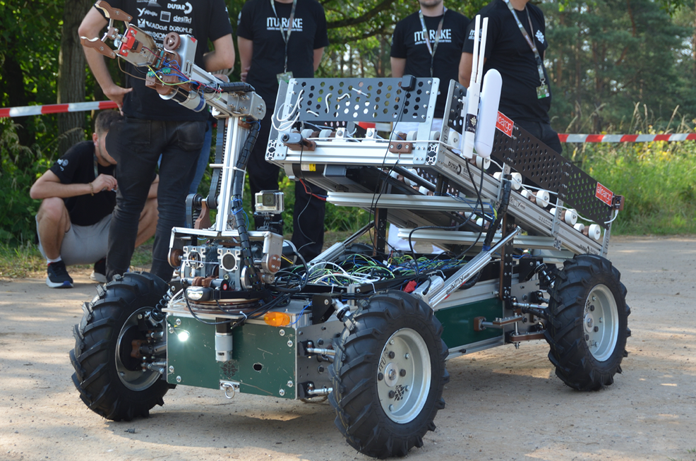
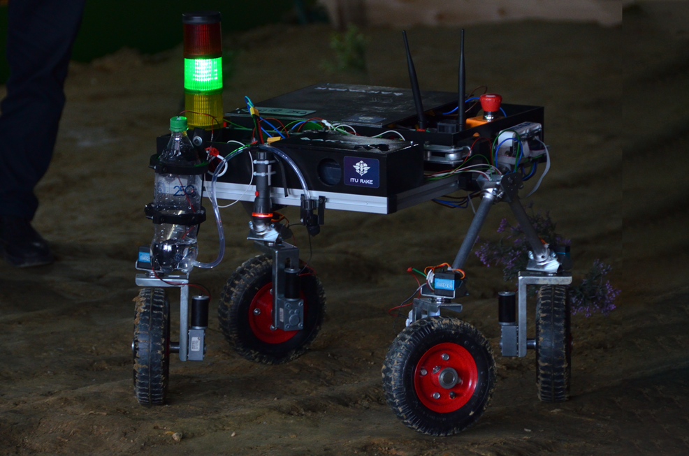
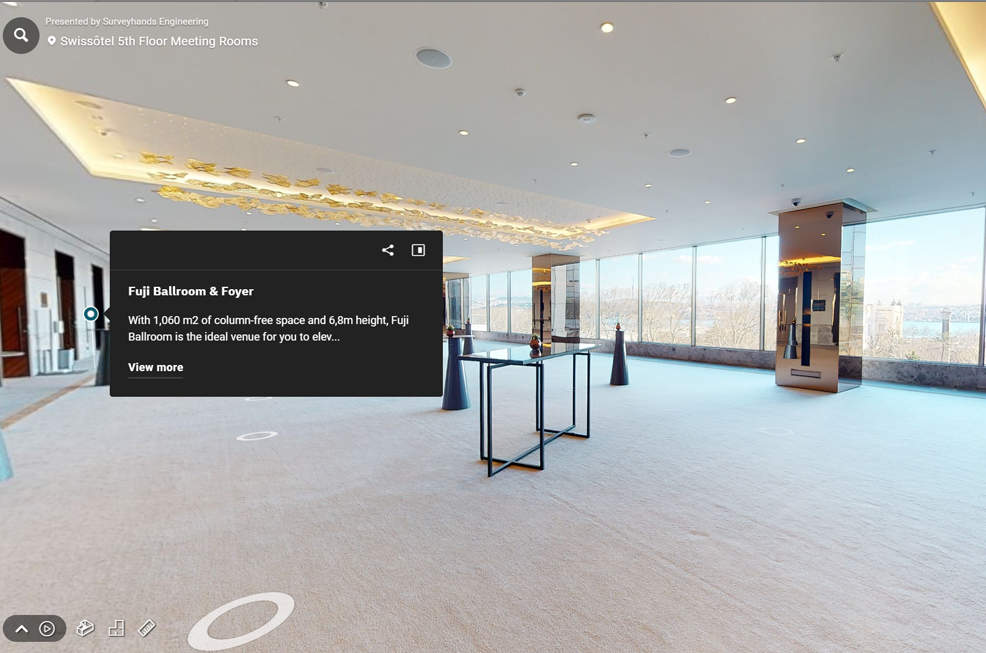
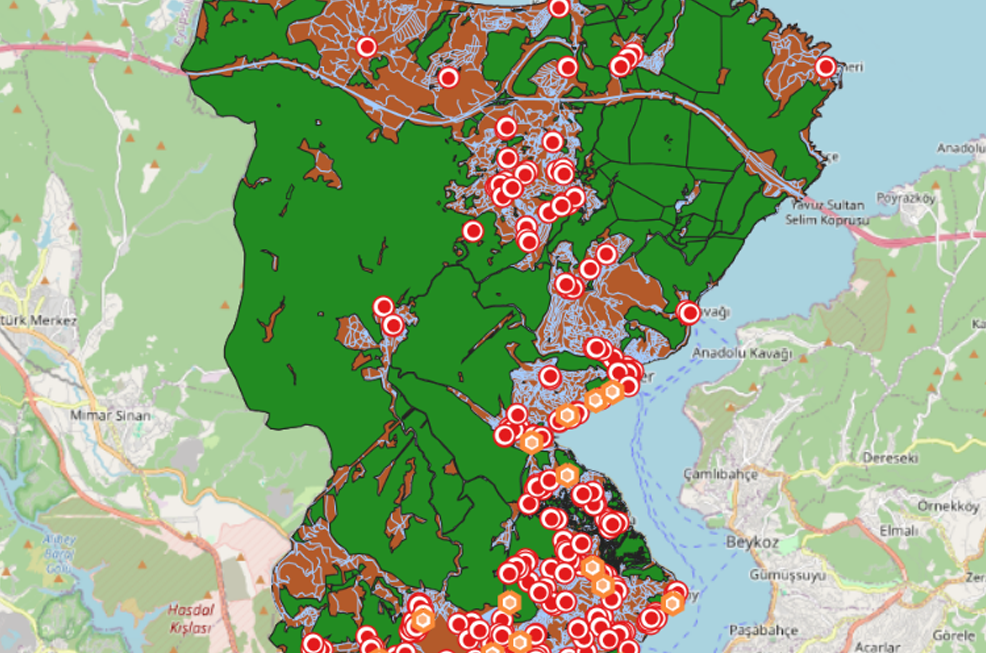
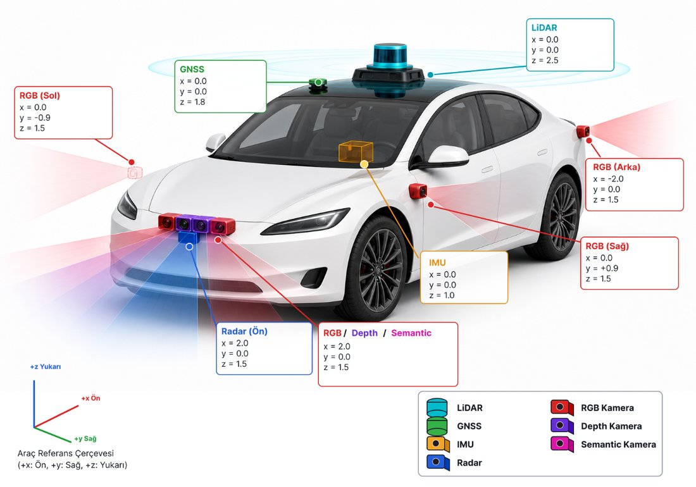
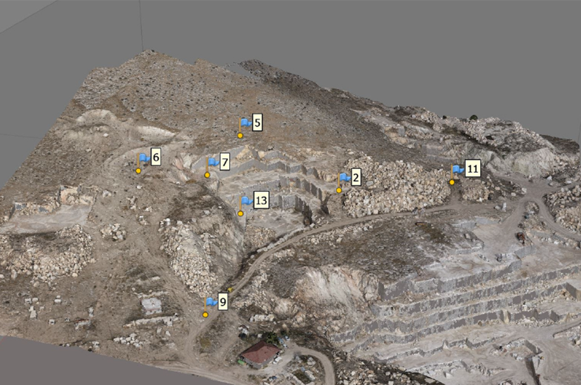

portfolio


UMAY
Search & Rescue
Search & Rescue

Bumble Bee
Search & Rescue
Search & Rescue

3D Laser Scanning & Virtual Tour
Surveyhands Engineering
Surveyhands Engineering

Child Friendly Urban Environment
GIS Project
GIS Project

Graduation Thesis
Autonomous Vehicles · Sensor Fusion
Autonomous Vehicles · Sensor Fusion

High Precision Orthophoto
Photogrammetry
Photogrammetry